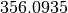
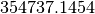

Monteverdi¶
Monteverdi is a satellite image viewer. Its main features are:
- Performance: Navigate instantly in full size satellite images thanks to its hardware accelerated rendering engine. Compose tiles or compare multiple images in a stack with rapid cycling and shader effects.
- Sensor geometry support: View raw images directly in sensor geometry! Resampling is handled by the GPU through texture mapping. OTB automagically handles coordinates mapping between actors and viewport geometries.
- Powerful: Access to all processing application from OTB. Orthorectification, optical calibration, classification, SAR processing, and much more!
This is Monteverdi’s main window where the different functionalities are:
- Main menu
- Top toolbar
- Image View
- Widgets
- Layer stack
Top toolbar¶
The top toolbar is made up of ten icons; from left to right:
- open one or more image(s)
- zoom in
- zoom out
- zoom to full extent
- zoom to layer extent
- zoom to full resolution
- gives/changes the current projection, used as reference of the view
- selects the effect to be applied to the selected layer: chessboard, local constrast, local translucency, normal, spectral angle, swipe (horizontal and vertical)
- a parameter used for the following effects: chessboard, local contrast, local translucency, spectral angle
- a parameter used for the following effects: local constrast, spectral angle
Image displaying¶
This part of the main window is intended to display the images loaded by the user. There are many nice keyboard shortcuts or mouse tricks that let the user have a better experience in navigating throughout the loaded images. These shortcuts and tricks are provided within the Help item of the main menu under Keymap. Here is a short list of the most commonly used ones:
The standard ones:
- CTRL+O = Open file(s)
- CTRL+Q = Quit application
In the image displaying part:
- Mouse drag = Scroll view
- CTRL+Mouse drag = Quick scroll view (rending is done after releasing CTRL key)
- Mouse wheel = Zoom
- or - = Zoom
In the layer stack part:
- SHIFT+Page Up = Move layer to top of stack
- SHIFT+Page Down = Move layer to bottom of stack
- Delete = Delete selected layer
- SHIFT+Delete = Delete all layers
Right side dock¶
The dock on the right side is divided into four tabs:
- Quicklook: provides an overview of the full extent of the image, and allows one to easily select the area to be displayed.
- Histogram: gives the user information about the value distribution of the selected channels. By clicking the mouse’s left button, user can sample their values.
- Color Setup: lets the user map the image channels to the RGB channels. Also lets him/her set the alpha parameter (translucency).
- Color dynamics: lets the user change the displaying dynamics of a selected image. For each RGB channel (each mapped to an image channel), the user can decide how the pixel range of a selected image will be shortcut before being rescaled to 0-255: either by setting the extremal values, or by setting the extremal quantiles.
Each tab is represented by the figures below ( [fig:quickhisto] [fig:colorsetdyn]).
Layer stack¶
The layer stack is made up of one list of layers located beneath six icons. The list of layers gives the user some information about the loaded images: projection, resolution (if available), name, and effect applied to the images (see top toolbar subsection). If the user moves the mouse over the displayed images, they will get more information:
- (i,j): pixel index
- (Red Green Blue): original image pixel values from channel mapped to the RGB ones.
- (X,Y): pixel position
Concerning the six icons, from left to right:
- 1st: moves the selected layer to the top of the stack
- 2nd: moves the selected layer up within the stack
- 3rd: moves the selected layer down within the stack
- 4th: moves the selected layer to the bottom of the stack
- 5th: use selected layer as projection reference
- 6th: applies all display settings (color-setup, color-dynamics, shader and so forth) of selected layer to all other layers
The layer stack is represented in the figure below ( [fig:layerstack]):
Examples¶
With , it is also possible to interactively load otb-applications and use them to process images. For that purpose, the user just has to load otb-applications by clicking on the Main menu, File/Load OTB-Applications (or by simply using the shortcut CTRL+A). The figure below ( [fig:applications]) represents the otb-applications loading window. The applications are arranged in thematic functionalities; the user can also quickly find the wanted application by typing its name in the dedicated field at the top of the loading window.
Optical calibration¶
In order to perform an optical calibration, launch the Optical calibration application (shortcut CTRL+A). We are going to use this application to perform a TOA (Top Of Atmosphere) conversion, which consists in converting the DN pixel values into spectral radiance (in W/m2/steradians/micrometers). Once the application is launched, the user must fill the required fields in (in, out, gainbias.txt -gain and bias values in a txt file-, solarillumination.txt -solar illumination values in watt/m2/micron for each band in a txt file-, and so on… refer to the documentation of the application).
- Note: if OTB (on which is based ) is able to parse the metadata of the image to be calibrated, then some of the fields will be automatically filled in.
In the figure below ( [fig:OC]), by taking a look at the layer stack, one can notice that the values of the calibrated image are now expressed in spectral radiance.
BandMath¶
BandMath application is intended to apply mathematical operations on pixels (launch it with shortcut CTRL+A). In this example, we are going to use this application to change the dynamics of an image, and check the result by looking at the histogram tab on the right-hand side of the GUI. The formula used is the following: . In the figures below ( [fig:BM]), one can notice that the mode of the distribution is located at position , whereas in the transformed image, the mode is located at position , that’s to say approximately 1000 times further away (the cursors aren’t placed exactly at the same position in the screenshots).
Segmentation¶
From within Monteverdi, the Segmentation application can be launched using the shortcut CTRL+A. We let the user take a look at the application’s documentation; let’s simply say that as we wish we could display the segmentation with , we must tell the application to output the segmentation in raster format. Thus, the value of the mode option must be set to raster. The following figure ( [fig:seg12]) shows the original image and the labels image.
Gray colors aren’t very convenient for visualizing a segmentation. That’s why we are going to use another application, the ColorMapping one (launch it with the shortcut CTRL+A as usual). There are many ways to use this application (see the documentation for more details). We wish we could colour the segmentation so that color difference between adjacent regions is maximized. For this purpose, we can use the method optimal (set the value of this option to optimal). The figure below ( [fig:seg3]) shows the result of such colorization.
Now it should be nice to superimpose this colorization with the original image to assess the quality of the segmentation. provides the user a very simple way to do it. Once the two images are loaded in and that the original image is placed on the top of the stack, the user just has to select the translucency layer effect and set the size of the exploration circle to convenience. The figure below ( [fig:seg4]) shows the result of such colorization. We encourage the reader to test the other layer effects.
Polarimetry¶
In this example, we are going to use three applications:
- the first one is SARDecompositions. This application is used to compute the HaA decomposition. It takes as inputs three complex channels from bands HH HV and VV.
- the second one is SplitImage. Indeed, the previous application had produced an output image made up of three channels, H a and A, and we wish to focus on the H parameter (entropy). So we let this application split this image into three one-band-images.
- the last one is ColorMapping. The entropy image has values ranging
from 0 to 1, and they can be easily displayed by . But since we have
a nice visualizing tool in hand, we wish we could go a little bit
further. Here comes the application ColorMapping. It is going to be
used with the following parameter settings:
- method = continuous. This parameters tells the application to use a gradient of colors to represent the entropy image.
- method.continuous.lut = hot. We specify here the kind of gradient to be used: low values in black, high ones in white, and intermediate ones in red/orange/yellow…
- method.continuous.min = 0 and method.continuous.max = 1. Here, the gradient of colors must be adjusted to the dynamic of the entropy image (note: it is theoretically known that in HaA decomposition, H ranges from 0 to 1. Generally speaking, the histogram of can also be used for this purpose).
In the figure below ( [fig:pol1]), we show the obtained result, with the local contrast layer effect.
Pansharpening¶
Finally, let’s try a last example with the Pansharpening application (launch it with shortcut CTRL+A). The fields are quite easy to fill in: this application needs a panchromatic image, a XS image, and an output image. These images are represented in the figures below ( [fig:ps12] and [fig:ps3]):
Now, in order to inspect the result properly, these three images are loaded in . The pansharpened image is placed to the top of the stack layer, and different layer effects are applied to it:
- in figure [fig:ps4]: chessboard effect, to compare the result with the XS image.
- in figure [fig:ps5]: translucency effect, to compare the result with the panchromatic image.
Conclusion¶
The images used in this documentation can be found in the OTB-Data repository (https://gitlab.orfeo-toolbox.org/orfeotoolbox/otb-data.git):
- in OTB-Data/Input:
- QB_TOULOUSE_MUL_Extract_500_500.tif and QB_Toulouse_Ortho_XS_ROI_170x230.tif (GUI presentation)
- RSAT_imagery_HH.tif RSAT_imagery_HV.tif RSAT_imagery_VV.tif (polarimetry example)
- QB_Toulouse_Ortho_PAN.tif QB_Toulouse_Ortho_XS.tif (pansharpening example)
- in OTB-Data/Input/mv2-test: QB_1_ortho.tif